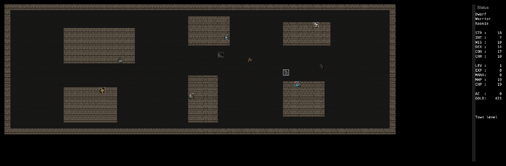
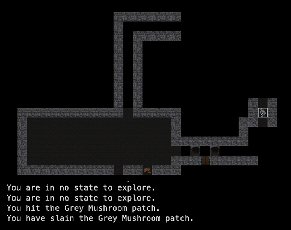
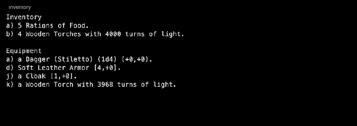

Robert Alan Koeneke played Rogue on a PDP-11 at the University of Oklahoma and, when the new VAX had no games, wrote his own: first in VMS BASIC, then in 1983 in VMS Pascal as Moria, with Tolkien's mines as the setting. In 1987 James E. Wilson converted it to C for Unix: Umoria. Umoria is the parent of Angband, and so of most games in the lower half of the family tree; BOSS is a sibling from VMS Moria.
Played here: Umoria 5.7.15, the restoration by Michael R. Cook, compiled as C++.
The splash screen: “Robert A. Koeneke’s classic roguelike”.

First steps: the town, with six numbered shops and the stairs down.

A fight at 50 feet: a Grey Mushroom patch confuses you with its spores, then dies.

Inventory: a dwarf warrior with food, torches, a stiletto, soft leather armour and a cloak.
Trivia
Koeneke vowed Moria was unbeatable; a week later a friend won. His character Iggy went into the game as Evil Iggy, and the trick was fixed. (Koeneke, history.md)
For the copy sent to the University of Texas before a football game, the town beggar became “An OU football fan” who multiplied at full speed. Texas had to call for a fix. (Koeneke, history.md)
Koeneke got letters from behind the iron curtain from players on VAXes that export laws said could not be there. (Koeneke, history.md)
The name Umoria came from the comp.sources.games moderator, who shortened “UNIX Moria”. (Wilson, history.md)
The hardest part of the Pascal-to-C conversion: off-by-one errors, because Pascal arrays start at 1. It took Wilson years. (Wilson, history.md)
Wilson almost decompiled UltraRogue instead, to fix its bugs, before he found the Moria sources. (Wilson, history.md)
Diablo’s credits name Umoria as an inspiration. (Wilson, history.md; Wikipedia)
What's unique
A town with shops you return to: sell loot, buy potions and scrolls.
Races and classes with a generated family background.
Levels are forgotten: every staircase makes a new level, so you can dive or stay as you like.
One goal: kill the Balrog at 2,500 feet (level 50). No amulet to carry home.
Monster memory: the game remembers what you have learned about each monster, across characters.
Code dive
Moria: VMS Pascal with some VAX assembler, on a VAX-11/780 at the University of Oklahoma.
Umoria: C, for Unix and curses; later MS-DOS, Atari ST, Amiga, Mac. 5.7 is C++ with the same data tables (data_creatures.cpp, data_treasure.cpp).
Wilson did most of the Pascal-to-C syntax conversion with Emacs macros.
Wizard mode:Ctrl+W, answer yes. No password. The game is no longer scored. Then Ctrl+A cures everything, Ctrl+D jumps to any depth, Ctrl+F kills every monster in sight, Ctrl+L lights up the map, + gives experience. On Windows and Linux the browser may close the tab on Ctrl+W.